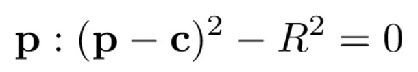

CS 184/284A: Computer Graphics and Imaging, Spring 2024
Homework 3: Pathtracer
Maya Zheng and Jaewon Lee
Sites available at:
Overview
In this homework assignment, we implemented a physics-based ray tracer. We rendered our image using different lighting methods, which are explored more in detail down below. Our ray tracer illuminated the scene and objects by simulating light rays that come out from the camera which ultimately reach a light source. We started off by generating our rays and primitive intersection methods — these are the foundations to our ray tracer. Then, to optimize the computation for rays traversing our scene, we used the BVH data structure and used a centroid average splitting heuristic to accelerate our computations. Once we had these building blocks in place, we then implemented direct illumination and global illumination. The former dealt with primary or secondary rays that intersect with the light source, whereas the latter also took into consideration light coming in from the surface’s hemisphere. Finally, for additional speedups, we implemented adaptive sampling, which allowed us to focus on pixels that took longer to converge. We didn’t have too many major roadblocks in terms of implementation — whenever we had to debug, one method that worked surprisingly well was simply deleting what we wrote and trying to re-implement it from scratch. It’s not the usual way to go about debugging, but it proved effective for this project. :>
Part 1: Ray Generation and Scene Intersection
- Walk through the ray generation and primitive intersection parts of the rendering pipeline.
We’ll discuss ray generation and generating pixel samples in this question, and delve deeper into the primitive intersection in the next question (the question only asks about triangle intersection, but we’ll talk about both ray-triangle and ray-sphere).
Starting with ray generation, we generate a ray in world space from a normalized image coordinate. This was done in the following steps:
- Convert the image coordinates, (x,y), to camera space, (x_c, y_c, -1):
- Given the image above, we know that the normalized image coordinates (0.5, 0.5), (0, 0) and (1,1) should map to the center, bottom left, and top right corner of the sensor in camera space, respectively.
- To accomplish this, we first scale, then translate, then apply tan with hFov and vFov to get the camera space coordinates (at z=-1).
- Set the direction of the ray in camera space: this is directly (x_c, y_c, -1), which we found form the previous part
- Convert the direction from camera space to world space:
- Set the direction vector to be itself times the camera-to-world rotation matrix, c2w
- Normalize the direction vector
- Finally create the camera ray:
- Set the ray to be in the direction of the vector we computed in the previous step and set the position to be the camera position
- Set the min_t and max_t of the ray to be nclip and fclip, since only rays between the two clipping planes are visible to the camera.
Moving onto generating pixel samples, we estimated the integral of radiance over a pixel. This was done by averaging over ns_aa samples:
- Generate ns_aa random rays by looping ns_aa times and averaging the radiance of the rays
- Use grid_sampler to sample and get a random coordinate within the pixel
- Normalize the sampled coordinates by dividing by the height and width of the image space
- Generate a random ray with the normalized coordinates using generate_ray function
- Get the estimated radiance along the random ray using est_radiance_global_illumination
- Update the radiance of the pixel with sampleBuffer.update_pixel
- Explain the triangle intersection algorithm you implemented in your own words.
For triangle intersection, we implemented the optimized ray intersection via the Moller Trumbore Algorithm, from lecture.
As a high-level overview, our implementation of the Moller Trumbore Algorithm first checks for the barycentric coordinates and then checks for plane intersection. From the image above, we can see that the Moller Trumbore Algorithm returns the barycentric coordinates of the intersection point (b_1 and b_2) and the distance from the ray's origin to the intersection (t). After we found the values that are laid out in the image above, we did the following checks:
- b1 and b2 are in the range [0,1] and their sum didn’t exceed 1, since they are barycentric coordinates.
- We also made sure that t is in the range [min_t, max_t]. If so, we updated max_t of the ray to be t. These checks ensure that the intersection point found is valid. Finally, we find the intersection's normal vector (n) as a weighted sum of the triangle's vertex normals using barycentric coordinates found and update the intersection structure.
For sphere intersection, we have a similar approach, except this time we solve for the surface of a sphere rather than a triangle. Then, we used barycentric coordinates for triangles and calculated values for spheres to update the intersection with valid normals as well as other data fields for the intersection struct.
First, we checked if there is an intersection between the sphere and the ray and the sphere. Since we know that the equation of a sphere is: 
To solve for the 2 points of intersection between the sphere and the ray, we solved for t from the quadratic equation, getting values t1 and t2.
We used the helper function test to check if the t values found fall within the range of [min_t, max_t] to determine if there is a valid intersection. Finally, we find the intersection's normal vector (n), by finding the point of intersection p using the equation p = o + max_t * d and finding the normal at the point.
- Show images with normal shading for a few small .dae files.
We have a table of images down below, as well as the commands that were run to generate the images.

| 
|
./pathtracer -r 800 600 -f CBspheres.png ../dae/sky/CBspheres_lambertian.dae | ./pathtracer -r 800 600 -f banana.png ../dae/keenan/banana.dae |

| 
|
./pathtracer -r 800 600 -f CBdragon.png ../dae/sky/CBdragon.dae | ./pathtracer -r 800 600 -f CBcoil.png ../dae/sky/CBcoil.dae |
Part 2: Bounding Volume Hierarchy
- Walk through your BVH construction algorithm. Explain the heuristic you chose for picking the splitting point.
We constructed a BVH recursively by using a heuristic of splitting at the average of the centroids along the axis of the largest extent. First, we computed the bounding box of all primitives by iterating through them — this will allow us to get the extents later. We then checked the number of primitives within this bounding box. If it is less than or equal to max_leaf_size, then we created and returned this node as a leaf node; we also set the node’s start and end before returning.
If there are more primitives than max_leaf_size, then this node is an inner node and we need to find the split axis as well as the split point. We decided to use the average of centroids along an axis as our split point heuristic because assuming a roughly symmetric distribution of primitives, we would have roughly the same amount of primitives in our left and right nodes — thus maximizing the efficiency of our tree traversal and reducing the depth of our BVH. We found the split point as follows:
- We create a centroid bounding box, iterate through all the primitives and expand the empty bbox to include centroids of each primitive. This is important for finding the split axis, the axis of maximum extent, by finding the max extent value of the centroid bounding box.
- After finding the axis to split on, we found the split point by indexing into that axis and calculating the average of the centroids along that axis.
Now that we have the split point, we used std::partition to divide the list to the left and right collection according to the split point, returning the ‘middle’ node. If all primitives lie on only one side of the split point, then we simply do a 50-50 split of the nodes and update the middle node to the middle of the list. Finally, we have the recursive construction, where we call construct_bvh for both collections (from start to middle, and from middle to end for the right) to create the left and right children nodes.
Here is what the GUI looks like for cow.dae:
- Show images with normal shading for a few large .dae files that you can only render with BVH acceleration.
We decided to render Max Planck, Wall-E, Lucy, and Peter.
|
|
./pathtracer -t 8 -r 800 600 -f maxplanck.png ../dae/meshedit/maxplanck.dae | ./pathtracer -t 8 -r 800 600 -f walle.png ../dae/sky/wall-e.dae |
|
|
./pathtracer -t 8 -r 800 600 -f CBlucy.png ../dae/sky/CBlucy.dae | ./pathtracer -t 8 -r 800 600 -f peter.png ../dae/meshedit/peter.dae |
- Compare rendering times on a few scenes with moderately complex geometries with and without BVH acceleration. Present your results in a one-paragraph analysis.
We can see that using BVH significantly decreases our rendering time, especially notable in more complex geometries. For example, when run locally, the rendering time for maxplank.dae was reduced from over 60s to around 0.137s, and the rendering time for CBLucy.dae was reduced from around 497s to 0.1029s. Comparisons for other rendering times, are included in the table below. This speed up is accomplished by eliminating much of the unnecessary intersection tests. Rather than natively checking for every object for every ray, we use BVH to only check for the objects that are relevant, by ignoring primitives in bounding boxes with no intersections. By using a tree structure for BVH, we are able to reduce our runtime from O(n) to O(log n).
| Without BVH | With BVH |
peter.dae | 51.5895s | 0.0934s |
beast.dae | 101.3175s | 0.1242s |
CBLucy.dae | 497.0692s | 0.1029s |
maxplank.dae | 61.8290s | 0.1374s |
Part 3: Direct Illumination
- Walk through both implementations of the direct lighting function.
We had two implementations of the direct lighting function: estimate_direct_lighting_hemisphere and estimate_direct_lighting_importance. As a high level overview, direct lighting/illumination is how objects are illuminated after one bounce. In both implementations, we followed rays from the camera towards the scene containing the objects. If the primary ray intersects an object, then we performed Monte Carlo sampling.
If the secondary ray intersects a light source, then we collect the luminance and weigh the samples accordingly at the intersection point.
Delving into more detail, in estimate_direct_lighting_hemisphere we sampled num_samples of incoming ray directions in the hemisphere wi, which were obtained via hemisphereSampler->get_sample(). We converted this into the world space, wi_world, and initialized a ray whose origin is the hit point and direction is wi_world. We then checked if this ray intersects with lights using bvh->intersect(). If it does, then it is illuminated and we update the new intersection sample_i; otherwise, we discard it as it does not add any direct light to our point of interest. We weighed the sample to account for the fact that we are using one hemisphere because of Lambertian diffuse. Given that it is a hemisphere, the pdf that we divided by in our Monte Carlo estimate is 1/2*pi. Then, we added the sample to L_out, which was normalized by num_samples before it was returned.
Moving onto estimate_direct_lighting_importance, the main difference is that we only sampled from the available light sources, instead of randomly casting rays and hoping that enough of them will hit a light source.
We iterated through all of the lights in the scene and checked if it was a delta light. If it is, then we set num_samples to be 1, ns_area_light otherwise (once for point lights, multiple times for area lights). We sampled using light->sample_L(), and converted wi from world space to object space, w_in. We check if the sample is behind the surface at the hit point, by checking if the z value of w_in is less than 0. If it is, we discard it since we do not need to cast this ray; otherwise, we create a shadow ray from the hit point in the wi direction, and check if it intersects with our BVH. We accumulate curr_sample and use it to calculate the total luminance, L_out.
- Show some images rendered with both implementations of the direct lighting function.
Here is a side-by-side comparison of CBbunny.dae using hemisphere sampling and importance sampling, both with direct lighting. As we can see, the colors are similar but hemisphere sampling is much more grainy compared to importance sampling. This graininess in hemisphere — or lack thereof for importance — is due to what we explained in the above part. Hemisphere sampling is more noisy and therefore takes longer to converge/results in grainier images, whereas importance sampling explicitly focuses on the light sources, allowing for a much smoother output given the same input parameters.
Hemisphere Sampling | Importance Sampling |
|
|
./pathtracer -t 8 -s 64 -l 32 -m 6 -H -f CBbunny_H_64_32.png -r 480 360 ../dae/sky/CBbunny.dae | ./pathtracer -t 8 -s 64 -l 32 -m 6 -f bunny_64_32.png -r 480 360 ../dae/sky/CBbunny.dae |
- Focus on one particular scene with at least one area light and compare the noise levels in soft shadows when rendering with 1, 4, 16, and 64 light rays (the -l flag) and with 1 sample per pixel (the -s flag) using light sampling, not uniform hemisphere sampling.
We will use CBbunny.dae again for this part:
-l 1 | -l 4 |
|
|
./pathtracer -t 8 -s 1 -l 1 -m 6 -f bunny_1_1.png -r 480 360 ../dae/sky/CBbunny.dae | ./pathtracer -t 8 -s 1 -l 4 -m 6 -f bunny_1_4.png -r 480 360 ../dae/sky/CBbunny.dae |
|
|
-l 16 | -l 64 |
|
|
./pathtracer -t 8 -s 1 -l 16 -m 6 -f bunny_1_16.png -r 480 360 ../dae/sky/CBbunny.dae | ./pathtracer -t 8 -s 1 -l 64 -m 6 -f bunny_1_64.png -r 480 360 ../dae/sky/CBbunny.dae |
As we can see from the images above, the noise levels in soft shadows decrease as the number of light rays increase. This is especially evident when we compare 1 or 4 rays compared to 16 or 64 rays. Even in the case of 4 rays, we can see individual dots that seem to suggest a shadow, whereas in the case of 64 rays, we can see that the shadow is now more of a gradient/is properly blurred.
- Compare the results between uniform hemisphere sampling and lighting sampling in a one-paragraph analysis.
As the number of light rays goes up for both methods, the total amount of noise we see is decreased. However, it is fairly evident that there is more noise in hemisphere sampling compared to lighting sampling. This makes sense because for uniform hemisphere sampling, only a small portion of the scene is light and takes many samples for convergence whereas we target the specific light sources in lighting sampling. Overall, lighting sampling allows for a smoother/less grainy rendering given the same input parameters.
Part 4: Global Illumination
- Walk through your implementation of the indirect lighting function.
Indirect lighting takes into account the light bounces aka light reflected from other surfaces, which gives renders a more realistic and visually richer look. In our implementation, we first edited at_least_one_bounce_radiance which returns the one bounce radiance + radiance from extra bounces at this point. First we initialized accumulated light in L_out , which is used to accumulate all light along the path up to max_ray_depth. If isAccumBounces is enabled, we then recursively accumulate radiance from multiple light bounces after the initial intersection. If it is, we know that there is at least one bounce, so we call one_bounce_radiance() to add the radiance contribution from exactly one direct bounce to L_out. Then, similarly to part 3, we sample a new direction from the surface's BSDF using isect.bsdf->sample_f(w_out, &wi, &pdf). We then cast a new ray (trace_ray) in this sampled direction from the hit point, decreasing the ray depth and checking if it intersects with the BVH. If it does, we calculate the cosine, cos_theta, between the sampled ray direction and the normal (isect.n), to ensure that it is on the surface if cos_theta>0. We then get the radiance by recursively calling at_least_one_bounce_radiance on the trace_ray at the hit point intersection, and weigh it by the material's bdsf and cos_theta, normalized by the sampling probability density function. This normalized radiance is accumulated into L_out. This recursion is terminated if the ray’s depth is no longer valid (depth = 0) or we terminate the recursion early using Russian Roulette by calling coin_flip(RUSSIAN_ROULETTE).
If isAccumBounces is not enabled, we only want to return the light from the max_ray_depth bounce. Therefore, the logic is pretty much the same as above, except instead of calling one_bounce_radiance for each bounce, and adding the radiance returned to L_out, we only call one_bounce_radiance when the recursion is terminated. This happens if the ray depth == 1, indicating that the max_ray_depth has been reached, or if it is early terminated by Russian Roulette, the radiance is added to L_out.
Finally, we update est_radiance_global_illumination to accumulate both the "direct" and "indirect" illumination, by returning the sum of zero_bounce_radiance(r, isect), representing the light directly from the source, and at_least_one_bounce_radiance(r, isect).
- Show some images rendered with global (direct and indirect) illumination. Use 1024 samples per pixel.
We have rendered bunny and banana using the same set of parameters for both of them: -t 8 -s 1024 -l 16 -m 5 -r 480 360.
Bunny | Banana |
|
|
./pathtracer -t 8 -s 1024 -l 16 -m 5 -r 480 360 -f bunny_1024_16_g.png ../dae/sky/CBbunny.dae | ./pathtracer -t 8 -s 1024 -l 16 -m 5 -r 480 360 -f banana_1024_16_g.png ../dae/keenan/banana.dae |
- Pick one scene and compare rendered views first with only direct illumination, then only indirect illumination. Use 1024 samples per pixel. (You will have to edit PathTracer::at_least_one_bounce_radiance(...) in your code to generate these views.)
We used CBspheres_lambertian.dae to compare the views with only direct illumination and only indirect illumination since we can directly see the colors on the sides of the spheres. The corresponding commands are also provided below.
Only Direct Illumination | Only Indirect Illumination |
|
|
./pathtracer -t 8 -s 1024 -l 16 -m 5 -r 480 360 -f spheres_1024_16_di.png ../dae/sky/CBspheres_lambertian.dae | ./pathtracer -t 8 -s 1024 -l 16 -m 5 -r 480 360 -f spheres_1024_16_ii.png ../dae/sky/CBspheres_lambertian.dae |
- For CBbunny.dae, render the mth bounce of light with max_ray_depth set to 0, 1, 2, 3, 4, and 5 (the -m flag), and isAccumBounces=false. Explain in your writeup what you see for the 2nd and 3rd bounce of light, and how it contributes to the quality of the rendered image compared to rasterization. Use 1024 samples per pixel.
For all of the images below, we used 1024 samples per pixel and 16 samples per area light (the usual settings given in the project specs). We can see that for the 2nd bounce of light, we know that only the effects of light that has reflected twice are visible and there is no direct illumination. This is therefore more dimly lit than the rasterization. For the 3rd bounce, the rendered image is dimmer than the rendered image from the 2nd bounce. This is because as the light bounces more, some of it gets absorbed by objects in the scene and therefore decreases as the number of bounces increase.
-m 0 | -m 1 |
|
|
./pathtracer -t 8 -s 1024 -l 16 -m 0 -o 0 -r 480 360 -f bunny_m0_o0.png ../dae/sky/CBbunny.dae | ./pathtracer -t 8 -s 1024 -l 16 -m 1 -o 0 -r 480 360 -f bunny_m1_o0.png ../dae/sky/CBbunny.dae |
-m 2 | -m 3 |
|
|
./pathtracer -t 8 -s 1024 -l 16 -m 2 -o 0 -r 480 360 -f bunny_m2_o0.png ../dae/sky/CBbunny.dae | ./pathtracer -t 8 -s 1024 -l 16 -m 3 -o 0 -r 480 360 -f bunny_m3_o0.png ../dae/sky/CBbunny.dae |
-m 4 | -m 5 |
|
|
./pathtracer -t 8 -s 1024 -l 16 -m 4 -o 0 -r 480 360 -f bunny_m4_o0.png ../dae/sky/CBbunny.dae | ./pathtracer -t 8 -s 1024 -l 16 -m 5 -o 0 -r 480 360 -f bunny_m5_o0.png ../dae/sky/CBbunny.dae |
- For CBbunny.dae, compare rendered views with max_ray_depth set to 0, 1, 2, 3, 4, and 5 (the -m flag). Use 1024 samples per pixel.
We do the same thing as the previous part, but we do global illumination (isAccumBounces is also toggled back to be true). Here are the rendered the images down below:
-m 0 | -m 1 |

| 
|
./pathtracer -t 8 -s 1024 -l 16 -m 0 -o 1 -r 480 360 -f bunny_m0_o1.png ../dae/sky/CBbunny.dae | ./pathtracer -t 8 -s 1024 -l 16 -m 1 -o 1 -r 480 360 -f bunny_m1_o1.png ../dae/sky/CBbunny.dae |
-m 2 | -m 3 |
|
|
./pathtracer -t 8 -s 1024 -l 16 -m 2 -o 1 -r 480 360 -f bunny_m2_o1.png ../dae/sky/CBbunny.dae | ./pathtracer -t 8 -s 1024 -l 16 -m 3 -o 1 -r 480 360 -f bunny_m3_o1.png ../dae/sky/CBbunny.dae |
-m 4 | -m 5 |
|
|
./pathtracer -t 8 -s 1024 -l 16 -m 4 -o 1 -r 480 360 -f bunny_m4_o1.png ../dae/sky/CBbunny.dae | ./pathtracer -t 8 -s 1024 -l 16 -m 5 -o 1 -r 480 360 -f bunny_m5_o1.png ../dae/sky/CBbunny.dae |
- For CBbunny.dae, output the Russian Roulette rendering with max_ray_depth set to 0, 1, 2, 3, 4, and 100 (the -m flag). Use 1024 samples per pixel.
The only change we made from the previous part is that -m 5 becomes -m 100, and we also changed #define RUSSIAN_ROULETTE 0 to #define RUSSIAN_ROULETTE 0.3.
-m 0 | -m 1 |
|
|
./pathtracer -t 8 -s 1024 -l 16 -m 0 -o 1 -r 480 360 -f bunny_m0_o1_r.png ../dae/sky/CBbunny.dae | ./pathtracer -t 8 -s 1024 -l 16 -m 1 -o 1 -r 480 360 -f bunny_m1_o1_r.png ../dae/sky/CBbunny.dae |
-m 2 | -m 3 |
|
|
./pathtracer -t 8 -s 1024 -l 16 -m 2 -o 1 -r 480 360 -f bunny_m2_o1_r.png ../dae/sky/CBbunny.dae | ./pathtracer -t 8 -s 1024 -l 16 -m 3 -o 1 -r 480 360 -f bunny_m3_o1_r.png ../dae/sky/CBbunny.dae |
-m 4 | -m 100 |
|
|
./pathtracer -t 8 -s 1024 -l 16 -m 4 -o 1 -r 480 360 -f bunny_m4_o1_r.png ../dae/sky/CBbunny.dae | ./pathtracer -t 8 -s 1024 -l 16 -m 100 -o 1 -r 480 360 -f bunny_m100_o1_r.png ../dae/sky/CBbunny.dae |
- Pick one scene and compare rendered views with various sample-per-pixel rates, including at least 1, 2, 4, 8, 16, 64, and 1024. Use 4 light rays.
We picked CBspheres_lambertian.dae to compare the different sample-per-pixel-rates. As the sample-per-pixel rate increases, we can see that the graininess of the scenes and the noise in the render decrease and that the images become clearer. This is especially noticeable in earlier increases in sample-per-pixel rates, for example from s = 1 to s = 2, and this is because there is less information to determine the color and intensity at each pixel. There are still notable improvements from s = 16 to s = 64, and the improvements start to converge after s = 64, with a fairly high-resolution image at s = 1024.
-s 1 | -s 2 |
|
|
./pathtracer -t 8 -s 1 -l 4 -m 5 -r 480 360 -f sphere_s_1.png ../dae/sky/CBspheres_lambertian.dae | ./pathtracer -t 8 -s 2 -l 4 -m 5 -r 480 360 -f sphere_s_2.png ../dae/sky/CBspheres_lambertian.dae |
-s 4 | -s 8 |
|
|
./pathtracer -t 8 -s 4 -l 4 -m 5 -r 480 360 -f sphere_s_4.png ../dae/sky/CBspheres_lambertian.dae | ./pathtracer -t 8 -s 8 -l 4 -m 5 -r 480 360 -f sphere_s_8.png ../dae/sky/CBspheres_lambertian.dae |
-s 16 | -s 64 |
|
|
./pathtracer -t 8 -s 16 -l 4 -m 5 -r 480 360 -f sphere_s_16.png ../dae/sky/CBspheres_lambertian.dae | ./pathtracer -t 8 -s 64 -l 4 -m 5 -r 480 360 -f sphere_s_64.png ../dae/sky/CBspheres_lambertian.dae |
-s 1024 |
|
|
|
./pathtracer -t 8 -s 1024 -l 4 -m 4 -r 480 360 -f sphere_s_1024.png ../dae/sky/CBspheres_lambertian.dae |
|
- You will probably want to use the instructional machines for the above renders in order to not burn up your own computer for hours.
My computer is now mildly hot enough to make lukewarm tea ._.
Part 5: Adaptive Sampling
- Explain adaptive sampling. Walk through your implementation of adaptive sampling.
In essence, adaptive sampling utilizes the fact that some pixel values converge faster than others (e.g. light sources and flat planes). It is wasteful and expensive to compute areas that don’t change as much, so we identify which pixels have converged and stop the ray tracing iterations early. This in turn allows us to spend more computing power on more complex/difficult parts of the scene.
Our implementation checks if we are 95% confident that our pixel value has converged. We have two values, s1 and s2, which are the sum and square sum of the sampled illuminance. From here, we calculate the mean, variance, and I. I is defined as 1.96 (1.96 standard deviation covers 95% of the normal distribution) times the standard deviation divided by the square root of the number of samples. If I is less than or equal to our maximum tolerance times the mean, then we are 95% confident that our pixel value has converged and break from the for loop. Otherwise, we conclude that we haven’t converged yet and continue to raytrace the pixel (until we iterate num_samples times). We also do the convergence check every samplesPerBatch times we sample so that we’re not recomputing the mean, variance, and I for each iteration of the loop.
Here is a rendering of CBbunny.dae using adaptive sampling (blue indicate lower sampling rates, and red indicate higher sampling rates):
bunny.png | bunny_rate_orig |
|
|
./pathtracer -t 8 -s 2048 -a 64 0.05 -l 1 -m 5 -r 480 360 -f bunny.png ../dae/sky/CBbunny.dae |
- Pick two scenes and render them with at least 2048 samples per pixel. Show a good sampling rate image with clearly visible differences in sampling rate over various regions and pixels. Include both your sample rate image, which shows how your adaptive sampling changes depending on which part of the image you are rendering, and your noise-free rendered result. Use 1 sample per light and at least 5 for max ray depth.
In both Wall-E and dragon, we can see that there are higher rates of sampling at the more complex areas and lower rates of sampling at the relatively simple areas. In both images, we can see that the background and smooth surfaces (e.g. Wall-E’s eyes and the dragon’s platform) are more blue/green whereas the more complex areas (e.g. Wall-E’s body/treads and the dragon’s scales) are more red. Overall, we can see that our adaptive sampling rates correlate directly with the complexity of that region in the scene.
walle.png | dragon.png |
|
|
|
|
./pathtracer -t 8 -s 2048 -a 64 0.05 -l 1 -m 5 -r 480 360 -f walle.png ../dae/sky/wall-e.dae | ./pathtracer -t 8 -s 2048 -a 64 0.05 -l 1 -m 5 -r 480 360 -f dragon.png ../dae/sky/dragon.dae |
Collaboration
Both partners contributed equally to this homework assignment.